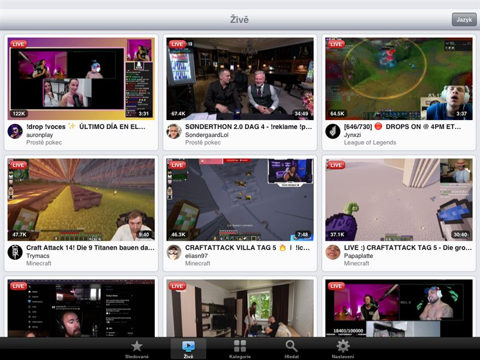
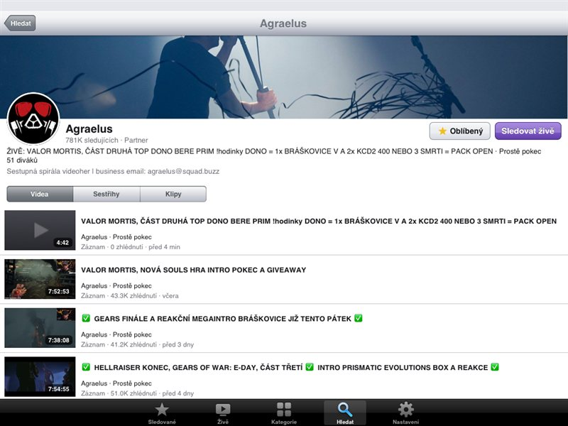

Twitcher
Twitch: live streams with chat, past broadcasts, clips
Twitch: live streams with chat, past broadcasts, clips
A universal Twitch client for iPhone and iPad in the glossy look of iOS 6. Watching needs no account; log in with a short code to see the channels you follow and to write in the chat. Twitch's servers only speak today's TLS, so the app carries its own TLS stack and hands the video to the system player through a tiny local proxy. Nothing leaves the device but the requests to Twitch and the emote services.




Unofficial apps by samcejko, not affiliated with or endorsed by Twitch, Google, Apple, TikTok, Instagram, Meta, Spotify, Kick, NVIDIA, Mojang, Microsoft, OpenRouter, Vine, X, diVine or the Moonlight, Sunshine and Apollo projects.